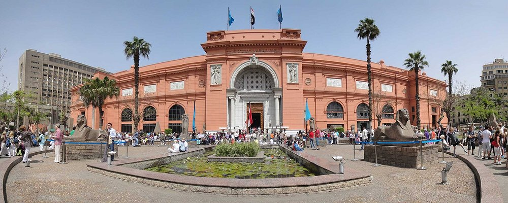

لمتحف المصري هو أحد أكبر وأشهر المتاحف العالمية، يقع في قلب العاصمة المصرية «القاهرة» بالجهة الشمالية لميدان التحرير. يعود تاريخ إنشائه إلى عام 1835 وكان موقعه حينها بحديقة الأزبكية ، حيث ضم وقتها عدداً كبيرًا من الآثار المتنوعة، ثم نقل بمحتوياته إلى قاعة العرض الثانية بقلعة صلاح الدين، حتى فكر عالم المصريات الفرنسي أوجوست مارييت الذي كان يعمل بمتحف اللوفر في افتتاح متحف يعرض فيه مجموعة من الآثار على شاطئ النيل عند بولاق، وعندما تعرضت هذه الآثار لخطر الفيضان تم نقلها إلى ملحق خاص بقصر الخديوي إسماعيل بالجيزة، ثم جاء عالم المصريات جاستون ماسبيرو وافتتح عام 1902 في عهد الخديوي عباس حلمي الثاني مبنى المتحف الجديد في موقعه الحالي في قلب القاهرة. يعتبر المتحف المصري من أوائل المتاحف في العالم التي أسست لتكون متحفًا عامًا على عكس المتاحف التي سبقته، يضم المتحف أكثر من 180 ألف قطعة أثرية أهمها المجموعات الأثرية التي عثر عليها في مقابر الملوك والحاشية الملكية للأسرة الوسطى في دهشور عام 1894، ويضم المتحف الآن أعظم مجموعة أثرية في العالم تعبر عن جميع مراحل التاريخ المصري القديم